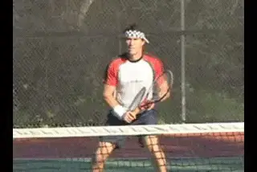
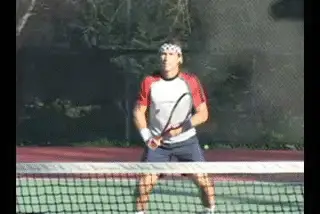
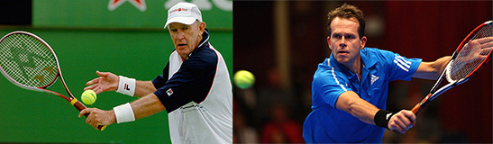

← Bài trước: Famous Coaches Mục lục | 🏠 Famous Coaches Trang chủ | Bài tiếp: → Developing World Class Volleys - Tha Forehand Volley
Phát triển cú bắt lưới trái tay hàng đầu
Thư viện kiến thức quần vợt thống nhất — Cơ bản, Phân tích kỹ thuật, Thư viện tham khảo và nhiều hơn nữa
Phát triển cú bắt lưới hàng đầu
Cú bắt lưới trái tay
Pat Cash Tháng trước chúng ta đã xem xét các cơ bản về cú bắt lưới thuận tay - cũng như một số hiểu lầm phổ biến khiến người chơi bị hạn chế. (Nhấn vào đây.) Bây giờ hãy làm tương tự với cú bắt lưới trái tay và xem cách bạn có thể phát triển kỹ thuật hàng đầu cho mình.

Các cơ bản của cú bắt lưới trái tay hàng đầu là gì?
Giống như cú bắt lưới thuận tay, tôi tin rằng trên cú bắt lưới trái tay bạn phải thực sự đánh qua bóng. Nếu bạn quay lại những ngày của những tay vợt vĩ đại của Úc chơi với vợt gỗ, bạn sẽ thấy họ bắt lưới như vậy. Tôi may mắn khi là người đã lớn lên với những tay vợt như vậy và học hỏi từ họ.
Họ phải có kỹ thuật tuyệt vời, vì nếu không, quả bóng sẽ không đi đâu cả. So với hầu hết những tay vợt bắt lưới hiện đại, những tay vợt bắt lưới vĩ đại của quá khứ sẽ tung vợt qua đường bóng nhiều hơn. Do đó, bạn sẽ thấy những tay vợt như Rod Laver thường tung vợt rất quyết liệt khi có thể.

Rod Laver: bắt lưới với vợt gỗ qua đường bóng.
Tuy nhiên, ngày nay với vợt hiện đại, người chơi có thể làm nhiều điều hơn và vẫn đưa bóng đi đâu đó trên sân. Họ có thể tiếp xúc không trung tâm mà không cần định vị chính xác cho cú đánh. Do đó, trong trận đấu hiện đại, ngược lại, có thể dễ dàng bắt lưới hơn, nhưng cú bắt lưới lại kém hiệu quả hơn.
Có lẽ sai lầm lớn nhất là người chơi hiện đại có xu hướng chém xuống qua bóng. Ngay cả Pete Sampras, một trong những tay vợt vĩ đại nhất, cũng gặp vấn đề này đôi khi. Anh ta thường chém xuống quá mạnh trên cú bắt lưới trái tay và không đánh qua bóng.
Việc chém xuống quá mức khiến rất khó để xuyên sân và đánh những cú bắt lưới thắng. Đặc biệt là vì vợt và dây có thể đánh những cú đánh truyền bóng xoáy cuộn dễ dàng hơn.
Điều tôi muốn giới thiệu trong bài viết này là các cơ bản để đánh qua bóng vững chắc - các cơ bản quan trọng hơn ngày nay nếu bạn muốn bắt lưới hiệu quả.
Các khác biệt

Những tay vợt bắt lưới hiện đại, ngay cả những tay vợt vĩ đại như Pete Sampras, đôi khi đánh quá nhiều xuống và không đủ qua.
Có một khác biệt rõ ràng giữa cú bắt lưới thuận tay và trái tay, đó là vị trí của vai đánh. Khi bạn xoay đúng trên cú bắt lưới trái tay, vai phải của bạn sẽ tự động vào vị trí. So với cú bắt lưới thuận tay, vai phải của bạn ở phía sau và bạn phải xoay nó về phía trước để tiếp xúc.
Cầm vợt kiểu lục địa
Đối với tôi, đó là kiểu cầm vợt lục địa trên trái tay. Tôi không nghĩ rằng tôi thực sự thay đổi kiểu cầm vợt từ quả bóng này sang quả bóng khác trên cú bắt lưới trái tay. Tôi không chống lại điều này, về lý thuyết tôi nghĩ rằng thay đổi kiểu cầm vợt cho quả bóng cao hơn, đi đến kiểu cầm vợt mạnh hơn với bàn tay ở trên cùng có thể là một ý tưởng tốt. Hoặc đi đến kiểu cầm vợt thuận tay cho cú đánh lưới, tôi cũng không chống lại điều này. Tôi nghĩ điều này hoàn toàn có ý nghĩa.
Bởi vì có ít chuyển động cơ thể hơn so với cú bắt lưới thuận tay, cú bắt lưới trái tay thực sự khá đơn giản. Tôi nghĩ điều này làm cho nó mạnh mẽ hơn và ổn định hơn. nói chung, cú bắt lưới trái tay an toàn hơn giữa những tay vợt hàng đầu, và có lẽ cũng ở cấp câu lạc bộ nếu người chơi có kỹ thuật tốt.
Sau khi xoay vai, chìa khóa là đánh qua bóng. Đầu vợt không thể di chuyển quá sắc nét xuống hoặc quả bóng sẽ mất tốc độ và nổi.

Xoay vai và chuyển động của cánh tay và vợt đi qua bóng.
Như vậy, cú bắt lưới trái tay rất giống với cú cắt bóng trái tay - đó là phiên bản gọn hơn với một cú đánh nhỏ hơn. Có một số chuyển động từ trên xuống, nhưng hầu hết chuyển động phải đi về phía trước và qua bóng.
Vị trí của cổ tay cũng dễ dàng hơn trên cú bắt lưới trái tay. Nó dễ dàng hơn để giữ cổ tay ở vị trí mạnh và cong. Điều này khó hơn trên cú bắt lưới thuận tay.
Trên những cú bắt lưới trái tay tốt, hình dạng hoặc cấu trúc của cánh tay và vợt vẫn tương đối giống nhau trên cú đánh về phía trước. Bạn chỉ cần di chuyển cấu trúc đó từ vai. Bạn có thể đi thẳng qua sân, hoặc bằng cách thay đổi vị trí của khuỷu tay, bạn đi xuống đường hoặc bên trong.
Bạn làm điều tương tự trên cú bắt lưới khẩn cấp khi quả bóng được đánh trực tiếp vào bạn - bằng cách kéo khuỷu tay qua cơ thể, bạn đưa đầu vợt vào vị trí và hình dạng giữa cánh tay và vợt vẫn tương đối giống nhau.

Khuỷu tay di chuyển từ bên trái sang bên phải của người chơi, tạo ra bên trong.
Bên trong
Cú bắt lưới trái tay hơi khó hơn là bên trong, nơi bạn phải cắt một chút bên trong, từ bên trái của người chơi sang bên phải. Bạn không thể làm điều đó một cách chính xác trừ khi bạn hạ đầu vợt. Nhưng lại, bạn làm điều này chủ yếu bằng cách di chuyển khuỷu tay. Đó là cách hạ đầu vợt.
Điều này trái ngược với hiểu lầm cũ là uốn cong càng xa càng tốt khi quả bóng thấp, với đầu gối sau quét đất. Bây giờ bạn có thể đi qua cơ thể bên trong với cú cắt bóng. Bạn có được sự trôi bên trong như vậy, và đó là một cú đánh lưới rất chết người.
So với cú bắt lưới thuận tay, thường có ít thao tác cổ tay hơn để đưa vợt dưới bóng trên những cú đánh lưới thấp. Như chúng ta đã thấy trong bài viết đầu tiên, trên cú bắt lưới thuận tay bạn cần thao tác cổ tay và làm lỏng bàn tay lên, điều này có thể khiến khó khăn để kiểm soát bóng.

Cơ thể vẫn ở vị trí ngang với tiếp xúc hơi phía trước.
Ví dụ điển hình là cú bắt lưới trái tay của Tony Roche mà tôi đã thấy khi anh vẫn còn chơi, và sau đó khi anh trở thành huấn luyện viên. Anh ấy luôn có cùng vị trí cổ tay đến vợt, và anh ấy thực sự di chuyển cú đánh lưới bằng cách đặt vị trí khuỷu tay cao hơn hoặc thấp hơn, hoặc bất cứ nơi nào anh ấy cần để đưa đầu vợt vào vị trí đúng.
Ở phía trước?
Chúng ta đã thấy rằng ý tưởng đánh cú bắt lưới xa phía trước cơ thể là một hiểu lầm trên cú bắt lưới thuận tay. Và điều đó cũng đúng trên cú bắt lưới trái tay. Điều này là vì cánh tay và vợt đang di chuyển về phía trước từ vai và giữ hình dạng của mình.
Bởi vì vị trí của vai phía trước, cú bắt lưới trái tay được đánh hơi xa phía trước hơn cú bắt lưới thuận tay. Nhưng nhiều nhất, tiếp xúc chỉ cách vài inch phía trước cơ thể.
Đôi khi, người chơi sẽ kéo khuỷu tay cho đến khi nó thẳng hoặc thậm chí thẳng tại tiếp xúc. Nhưng nếu bạn di chuyển quá xa phía trước, bạn sẽ mất vị trí của vai và mối quan hệ giữa vợt và cổ tay, điều này sẽ khiến cú bắt lưới quá yếu để thực sự hiệu quả.

Đưa chân trái gần bóng hơn và đôi khi đánh mở hoặc bán mở.
Thế đứng
Hiểu lầm lớn khác trên cú bắt lưới trái tay, tương tự như cú bắt lưới thuận tay, là bạn nên cố gắng bước qua cơ thể với chân trước. Điều này sẽ lấy đi sức mạnh, theo tôi, và hạn chế nơi bạn có thể đi với quả bóng. Nếu bạn bước nhảy ngang, bạn chỉ có thể đi qua sân.
Rất khó để giữ thăng bằng và gần như không thể đánh bóng bên trong. Khuyết điểm khác của bước nhảy ngang là nó cần một bước phục hồi thêm để quay lại vị trí. Tôi nghĩ đây là một sai lầm phổ biến của người chơi nghiệp dư và cả những tay vợt chuyên nghiệp.
Những gì người chơi cần tập trung là đưa chân trái gần bóng hơn trên cú bắt lưới trái tay. Nhiều lần bạn sẽ muốn đánh cú bắt lưới trái tay với thế đứng bán mở hoặc thậm chí mở. Từ đó bạn có thể thực sự đẩy lùi với chân sau qua cú đánh.
Đó không phải lúc nào cũng có thể, đương nhiên. Nếu quả bóng quá rộng mà bạn cần nhảy, có, đặt chân của bạn qua. Nhưng khi nào có thể, hãy cố gắng định vị với chân sau và giữ thăng bằng.

Tony Roche và Stefan Edberg: hai trong số những tay vợt bắt lưới trái tay vĩ đại nhất.
Lịch sử một tay
Nếu bạn xem xét lịch sử của môn quần vợt, bạn không thể tranh luận được rằng hầu hết những tay vợt vĩ đại đã đánh trái tay với một tay. Những tay vợt đánh trái tay một tay thường có cú cắt bóng và cú đánh tiếp cận tốt, và cơ bản, cú bắt lưới trái tay chỉ là phiên bản gọn hơn của cú đánh tiếp cận. Stefan Edberg có lẽ là tay vợt bắt lưới trái tay tốt nhất mà tôi từng thấy. Cú bắt lưới trái tay của John McEnroe cũng tuyệt vời.
Tuy nhiên, đối với tôi, cú bắt lưới trái tay của Edberg đã nâng tầm. Khi tôi lần đầu tiên chơi với anh ấy, có vẻ như mọi cú bắt lưới trái tay đều là một người chiến thắng sạch sẽ. Anh ấy có cú bắt lưới trái tay khó nhất mà tôi từng thấy. Và tôi nghĩ, wow, tôi cần cải thiện trò chơi của mình một chút và đánh cú bắt lưới trái tay mạnh hơn. Vì vậy, xem và chơi với Edberg thực sự thúc đẩy tôi cải thiện.

Những tay vợt trẻ gặp khó khăn khi để tay ra và thường chém xuống.
Những tay vợt trẻ
Tôi nghĩ một trong những điều mà nhiều tay vợt trẻ gặp phải là thực sự chém xuống khá mạnh từ vị trí quá cao. Đây là một vấn đề thực sự với những tay vợt trẻ vì sự thống trị hoàn toàn của cú đánh trái tay hai tay.
Bạn thường thấy nhiều cú bắt lưới trái tay khá xấu từ những tay vợt trẻ với hai tay. Họ gặp khó khăn khi lấy một tay ra khỏi vợt.
Đối với một số trẻ, chỉ là vấn đề về sức mạnh trong cánh tay. Tôi từng giữ một quả bóng squash trong túi quần trường và chỉ đi quanh đó. Tôi nắm chặt quả bóng đó trong nhiều giờ để tăng cường cánh tay trước. Tôi đánh vào tường nhiều giờ - chỉ đánh cú bắt lưới trái tay, cú bắt lưới trái tay.
Đối với những tay vợt trẻ, điều quan trọng là không lo lắng về việc phải cố gắng đánh bóng cứng và chỉ tập trung vào kỹ thuật và nhận ra rằng sức mạnh sẽ đến. Tốc độ trên cú bắt lưới trái tay sẽ đến với chuyển động tự tin.

Sức mạnh đến từ việc di chuyển về phía trước và gặp bóng với vị trí cánh tay vững chắc.
Chuyển động về phía trước
Như tôi đã nói về phía thuận tay, chuyển động về phía trước hoặc chuyển động liên tục là điều tuyệt đối cần thiết để thực hiện cú bắt lưới tốt trong trận đấu. Khi tôi huấn luyện, tôi không bao giờ để người chơi thực hiện các bài tập bắt lưới khi họ đứng yên.
Thay vì bước nhảy qua, hãy bước một nửa bước sang trái với chân ngoài gần bóng nhất. Cú bắt lưới là rất nhiều bước nửa bước. Bạn thấy
Nếu bạn luôn có thể di chuyển về phía trước và chỉ gặp bóng với cánh tay vững chắc, thì quả bóng sẽ có được một phần tốc độ khá nhiều, bạn thực sự không cần phải tung vợt lớn nếu bạn đánh bóng ở giữa vợt. Nhưng bạn phải bắt đầu dễ dàng, tập trung vào kỹ thuật và đánh qua bóng, thay vì chém xuống.

Pat Cash là một trong những tay vợt vĩ đại trong lịch sử quần vợt, đã giành được hơn 400 trận đấu trên tour, và 19 danh hiệu đơn và đôi trong suốt sự nghiệp 15 năm. Vào những năm 1980 đầu tiên, anh ấy là tay vợt trẻ số một thế giới, giành chiến thắng tại Wimbledon và Giải quần vợt Mỹ Mở rộng. Năm 1987, anh ấy giành được danh hiệu đơn nam tại Wimbledon, đánh bại Mats Wilander, Jimmy Connors, và trong trận chung kết, Ivan Lendl, một trận đấu được coi là một trong những ví dụ vĩ đại nhất về quần vợt tấn công từng được chơi trong trận chung kết Grand Slam. Hôm nay, anh tiếp tục thi đấu thành công trên tour cao tuổi. Chúng tôi rất vui mừng được có Pat làm đóng góp viên cho Tennisplayer.net!
Truy cập trang web chính thức của Pat tại http://www.patcash.net
Nguồn: tennisplayer.net lưu trữ — Phát triển cú bắt lưới hàng đầu - Cú bắt lưới trái tay.docx (thư viện giảng dạy của John Yandell, 2002-2022). Trích xuất và hiển thị dưới dạng HTML cho Tennis Future Lab.